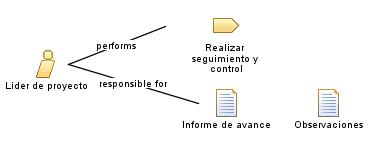

| Role: Lider de proyecto |
 |
|
 |
||
| Primary Performs | ||
|---|---|---|
| Modifies |
|
|
El líder de proyecto cumple tareas como:
|
| Skills |
El líder de proyecto tiene algunas habilidades como:
Gran conocimiento en software empresarial. |
|---|---|
| Assignment Approaches | El líder de proyecto tiene diferentes enfoques de asignación tales como:
Documentar todo el desarrollo del proyecto |
El líder del proyecto:
No podrá dejar pasar ningún detalle |